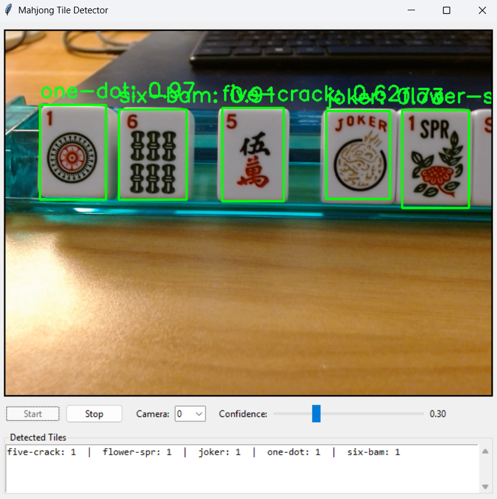

MJAI — Mahjongg AI Coach
Building a real-time AI coaching system for a game with imperfect information.
Status as of April 2026: Vision model trained. Coach agent + UI in development.
Runs on: Raspberry Pi + webcam/mic
Inputs: tiles + calls
Outputs: top 3 targets + discard recommendation + clarifying questions

Vision model testing
The Problem
Mahjongg is a game of strategy and luck. I enjoy playing, but I'm slow. I spend a lot of time reading the card and watching what others are doing. There are strategic decisions that have to be made each turn, so I wanted to create something to help me get faster at knowing roughly what I should do next.
For me, MJAI stands in as a skilled player giving me advice. Ideally, I won't need this assistant as much the more that I play.
This project is built as an uncertainty-driven "coach agent": when the system isn't sure what it saw or heard (or when two strategic options are neck-and-neck), it proactively asks a quick clarifying question instead of silently guessing.
Why It's Hard
- Tile recognition variance: Mahjongg tiles are small, can overlap, shift during play, and lighting conditions change at every table. The vision model needs to reliably classify 43 tile classes under real-world conditions.
- Real-time constraint: The system has to keep up with the pace of a live game. Processing has to be fast enough to run on an edge device without interfering with gameplay.
- Imperfect information: Unlike chess, you can't see the full game state. Strategy depends on partial information: your hand, what's been discarded, what's been exposed by other players, and what you can infer from audio cues.
- Audio parsing: Players announce discards and calls out loud. Speech-to-text has to handle Mahjongg-specific vocabulary, background noise, and overlapping conversation.
- Balancing helpfulness and interruption: A coach that asks too many questions is annoying. One that silently guesses wrong is worse. Finding the right threshold for when to ask is a core design challenge.
What It Does
- Computer vision detects and classifies tiles from a webcam feed (43 classes)
- Audio + speech-to-text transcribes table calls and parses tile names/calls (like "mahjongg!")
- Strategy engine scores candidate hands (from a Mahjongg card JSON) and returns the top targets + a discard suggestion
- Coach agent detects ambiguity and prompts for confirmation when confidence is low
- LLM narrator turns deterministic strategy output into friendly coaching text (it's not the decision-maker)
System Architecture
Codebase Modules
- Vision: TensorFlow model inference from an Azure Custom Vision export. Recognizes 43 tile classes and maps labels into internal Tile objects.
- Audio: Captures audio chunks and transcribes with Whisper. Parses calls + tile names with a Mahjongg-aware normalization step.
- Game State: Tracks the best-known current hand, discards/calls, and a confidence level.
- Strategy Engine: Scores candidate hands, returns top targets, and generates discard advice. Supports a preference signal like "speed" vs "points" (used in sorting).
- Coach Agent: Produces uncertainty events, generates short questions, and processes answers. Integrates with the orchestrator and UI (distinct "coach question" widget).
- Orchestrator: Coordinates all modules, runs the main processing loop, and routes events. The processing loop pulls detections, updates state, runs strategy, updates UI, and decays confidence.
Processing Flow
Webcam → Vision Model (43 tile classes)
↓
Microphone → Whisper STT → Call Parser
↓
Game State Tracker
↓
Strategy Engine (card-aware scoring)
↓
Coach Agent (uncertainty detection)
↓
UI: hand, targets, discard, coach promptsThe Coach Agent
Most systems in this space either silently guess when inputs are messy, or constantly ask you to confirm everything. I'm aiming for a middle path: ask only when it matters.
What the coach detects
The coach watches for uncertainty across vision, audio, and strategy:
- Ambiguous tile: "I'm seeing either 3 Bam or 3 Crack in slot 9."
- Unstable detection: a tile keeps flipping across frames.
- Ambiguous call: "Did you say pung or kong?"
- Close hand scores: "Two hands are close: Hand A vs Hand B."
Decision logic
- High confidence (>0.9): auto-proceed, no question
- Medium (0.6–0.9): ask if not rate-limited
- Low (<0.6): always ask, increase urgency
Rate limiting
So the coach doesn't become annoying:
- Max 3 prompts per minute
- Minimum 5 seconds between prompts
- High-urgency events can bypass limits
Game Workflow
Designed to work like a real coach sitting next to you: it watches and listens continuously, but only interrupts when it needs clarification.
0) Setup (before the game)
- Player selects the NMJL card file to use (or confirms the default)
- Player chooses a lightweight preference (optional): speed vs points
- MJAI confirms the camera and mic are active, then shows a "ready" status
1) Charleston (vision-only)
During the Charleston, MJAI is primarily a vision-driven helper. It continuously reads the player's hand from the camera feed and maintains a best-known hand state. On the player's turn, the player taps "Coach me" (or uses a hotkey) to request advice. MJAI re-checks the hand, ranks the top target hands, and suggests what to pass/keep. If the hand read is uncertain, the Coach Agent asks a quick confirmation question.
2) Transition to main play
When Charleston ends, the player taps "Start Game" (or uses a voice command). MJAI switches to vision + audio mode and resets any Charleston-only assumptions.
3) Main game loop
MJAI runs a repeating loop in the background:
- Sense: Vision module updates the player's hand. Audio module listens for calls/discards and parses game events.
- Update state: Game state is updated with the player's hand (with confidence), known discards/exposures, and turn/phase markers. If MJAI isn't confident about a detected tile or call, it creates an uncertainty event.
- Coach intervention (only when needed): If uncertainty crosses a threshold, MJAI prompts the player. The player can answer via quick buttons. The system updates state and continues.
- Advise on demand: When the player taps "My Turn", MJAI computes top target hands, one discard recommendation, and a short rationale. The LLM narrator rewrites the rationale into friendly coaching text.
4) End of game + review
When a player calls "Mahjongg!", MJAI logs the end state and asks the user to confirm the outcome (won or lost). MJAI then provides a short reflection: missed opportunities, common confusions, and a suggested focus area for the next session.
UI
Designed for an 800×480 Raspberry Pi touchscreen. Core UI areas:
- Current hand
- Top target hands (ranked)
- Discard recommendation
- Status + confidence indicator
- Coach prompt area (when needed)
Manual controls (available at any time)
Real-world inputs are messy, so the system is built to degrade gracefully and let you override:
- New Game / End Game
- Resync Hand
- Advance Turn
- Correct Tile
- Mute Coach prompts
Product Thinking
Target user personas
- New Mahjongg players who are just learning
- Intermediate Mahjongg players who want to refine their strategy
- Anti-personas: advanced players, competition players
MVP acceptance criteria
- MJAI can see the hand of the user at any point during the game
- MJAI can correctly track other players through audio cues
- MJAI asks for clarification if needed
- MJAI provides strategy when asked
- MJAI does not hallucinate hands or strategy
- MJAI bases its strategy only off the specific card that the user has indicated
- MJAI adjusts strategy based on the existing game state
- The player can see and interact with the display without disrupting the game
Risks + mitigations
- Speed: Keep vision model small and edge-device compatible. Run a background loop that updates state continuously, but only compute "full advice" when the user requests it. Rate-limit Coach Agent prompts.
- Perception accuracy: Track confidence per tile/slot and decay when detections are unstable. Provide fast manual correction (tap-to-fix) and "Resync Hand" control. Constrain audio parsing to a Mahjongg-specific vocabulary.
- Strategy correctness: Only score hands from the user-selected card file. Keep strategy logic deterministic and testable. Treat the LLM narrator as "wording only" and never allow it to alter the underlying recommendation.
- Coach behavior: Rate-limit prompts. Only interrupt on low confidence or high-impact ambiguity. Allow the user to temporarily mute prompts. Surface a persistent "Needs confirmation" indicator when unresolved uncertainty exists.
What's Next
- Complete the coach agent integration with the strategy engine
- Build and test the Raspberry Pi touchscreen UI
- End-to-end testing with live gameplay
- V2: transform the MVP into a mobile app with a more broadly trained vision model